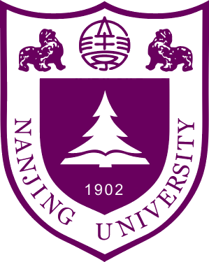
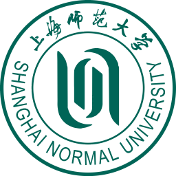
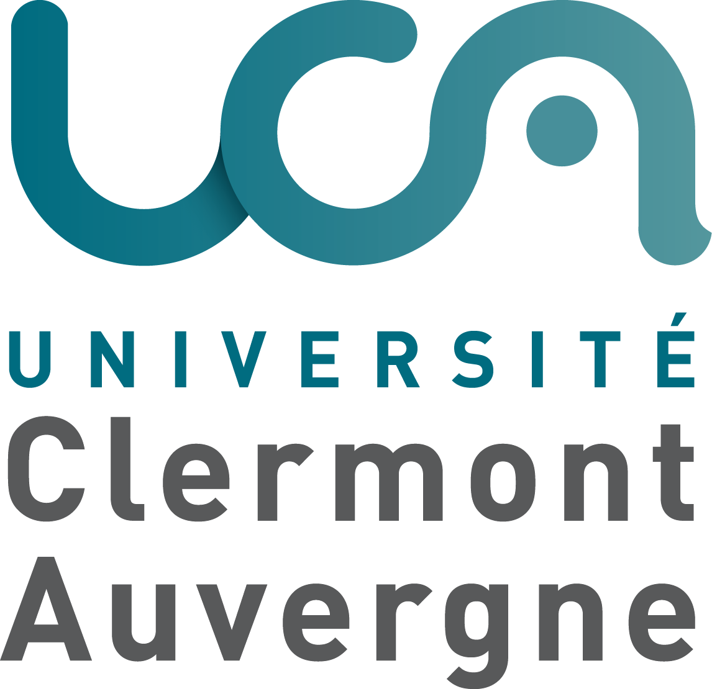
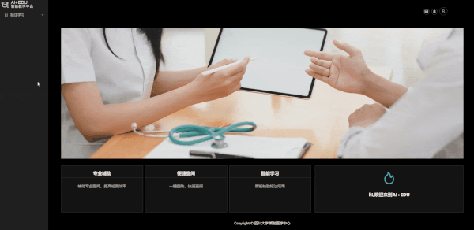
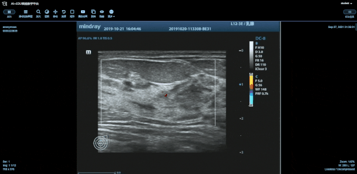
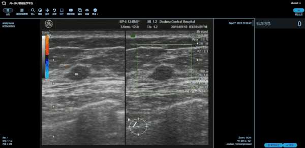

Biography
I am a CS/AI PhD candidate at Nanjing University, advised by Assoc. Prof. Shuo Chen. My research focuses on computer vision, semi- and weakly-supervised learning, and medical image analysis. Previously, I worked on medical image computing at Sichuan University and A*STAR IHPC.
News
- 2025.10 Won First Prize in the 2025 Data and AI Implementation Competition.
- 2025.06 One paper accepted at MICCAI 2025.
- 2025.02 Started my PhD journey at NJU.
- 2024.12 One paper made public (but likely no updates further).
- 2024.07 Completed internship at IHPC, A*STAR.
- 2024.01 One paper accepted in AIR.
- 2023.08 One paper accepted in IEEE TMI.
Education
-

Ph.D. Candidate, Computer Science,
February 2025 – Present
Nanjing University, Suzhou, China
Reliable Machine Intelligence Lab (REMI-Lab)
Advisor: Assoc. Prof. Shuo Chen (Excellent Young Scientists Fund (overseas), Municipal (GUSU) Leading Talents Fund) -
M.Eng., Artificial Intelligence,
June 2021 – June 2024
Sichuan University, Chengdu, China
Machine Intelligence Lab (MI-Lab)
Advisor: Prof. Haixian Zhang
Honors: Outstanding Graduate & Student Awards, Outstanding Thesis Award Nomination (3%) -

-
B.Sc., Computer Science,
September 2015 – July 2019
Shanghai Normal University, Shanghai, China - Université Clermont Auvergne, Clermont-Ferrand, France
Honors: The Xu Guangqi Elite Program (1%)
Experience
Professional
-
Research Assistant,
August 2024 – August 2025
MI-Lab, Sichuan University, Chengdu, China -
Intern Researcher,
January 2024 – July 2024
Institute of High Performance Computing (IHPC), Agency for Science, Technology and Research (A*STAR), Singapore
Mentor: Senior Scientist Liangli Zhen and Scientist Zizhou Wang -
Academic Affairs Officer,
January 2020 – October 2020
Chongqing Three Gorges Medical College, Chongqing, China -
Data Engineer,
February 2019 – August 2019
BONC Ltd., Shanghai, China
Academic Leadership
-
PhD Cohort Representative (2025 Intake),
October 2025 – Present
School of Intelligence Science & Technology, Nanjing University, Suzhou, China
-
Research Team Leader,
June 2022 – February 2025
MI-Lab, Sichuan University, Chengdu, China
Competition
-
🥇 Team Leader, Champion (with a ¥30,000 prize), October 2025
The 2025 Data and AI Implementation Competition: "Empowering Intelligence Through Data" [link]
Organizer: Hangzhou D5 Data & Binjiang Institute of AI, ZJUT & Science and Technology Bureau of Hangzhou
Research Interests
- Computer Vision: Object Detection
- Semi- & Weakly-Supervised Learning: Semi-/Weakly-Supervised Object Detection
- Medical Image Analysis: 3D/Longitudinal CT Computing, Computational Pathology
Selected Publications
Journal Papers (* contributed equally)
-
From Single to Universal: Tiny Lesion Detection in Medical Imaging.
Y Zhang, Y Mao, X Lu, X Zou, H Huang, X Li, J Li, H Zhang.
Artificial Intelligence Review (AIR), 2024. -
An Intelligent System of Predicting Lymph Node Metastasis in Colorectal Cancer Using 3D CT Scans.
M Xie*, Y Zhang*, X Li, J Li, X Zou, Y Mao, H Zhang.
International Journal of Intelligent Systems (IJIS), 2024. -
FAOT-Net: A 1.5-stage Framework for 3D Pelvic Lymph Node Detection with Online Candidate Tuning.
Y Zhang, J Li, X Li, M Xie, MT Islam, H Zhang.
IEEE Transactions on Medical Imaging (TMI), 2023.
Conference Papers
-
Asymmetric Matching in Abdominal Lymph Nodes of Follow-Up CT Scans.
Y Mao, Y Zhang, X Zou, Y Zheng, H Zhang.
International Conference on Medical Image Computing and Computer Assisted Intervention (MICCAI), 2025. -
MMUDA: A Mutual Multi-Task Learning Network with Unsupervised Domain Adaptation for Glaucoma Screening.
T Yin, Y Zhang, D Wu, W Shang, H Zhang.
IEEE International Conference on Bioinformatics and Biomedicine (BIBM), 2024. -
Predicting Lymph Node Metastasis of Colorectal Cancer in CT Scans Using Attention-Based Multiple Instance Learning.
M Xie, Y Zhang, X Li, Y Mao, X Zou, H Zhang.
IEEE International Conference on Bioinformatics and Biomedicine (BIBM), 2023.
Preprint Papers (* contributed equally)
-
Look a Group at Once: Multi-Slide Modeling for Survival Prediction.
X Li*, Y Zhang*, Y Xie, J Yang, X Wang, H Chen, H Zhang.
arXiv preprint, 2024.
Research Resources
-
Abdominopelvic Lymph Node Dataset Suite
Developed in collaboration with West China Hospital's Colorectal Cancer Center for full-cycle lymph node metastasis analysis in abdominopelvic cancers, including:
- World's largest detection dataset: 400 CT volumes, 10,400 nodes. [to be open sourced]
- World's largest metastasis dataset: 517 CT volumes with pathological label, 11,925 nodes. [to be open sourced]
- World's first longitudinal tracking dataset: 583 temporal CT pairs, 9,649 matched node pairs. [to be open sourced]
-
Medical Image Integrated Platform
An integrated platform for large-scale medical image management, visualization, and annotation.



Services
-
Journal Reviewer
IEEE Transactions on Medical Imaging (TMI)